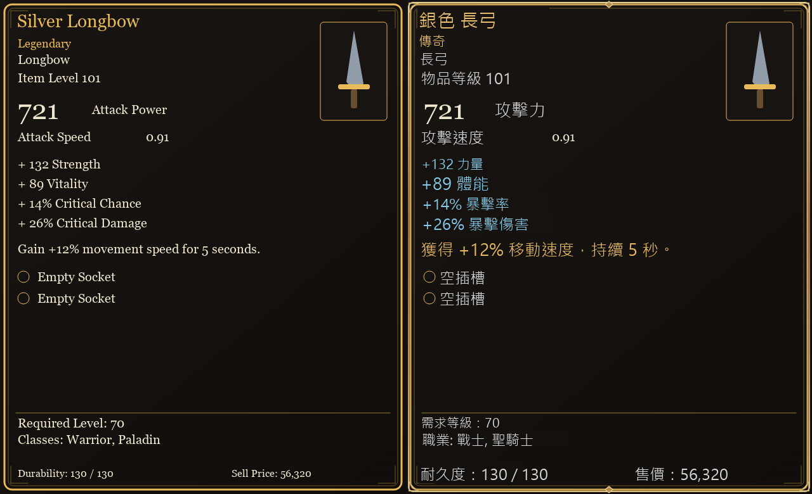

暗黑奇幻金框 · standard — 檢查通過
649.18 ms · 最低對比 10.26

測試細節
{
"render_warning": "",
"error": null,
"missing_source_words": {},
"extra_source_words": {},
"missing_source_numbers": {},
"extra_source_numbers": {},
"missing_target_numbers": {},
"extra_target_numbers": {},
"required_markers": {},
"art_unchanged": true
}